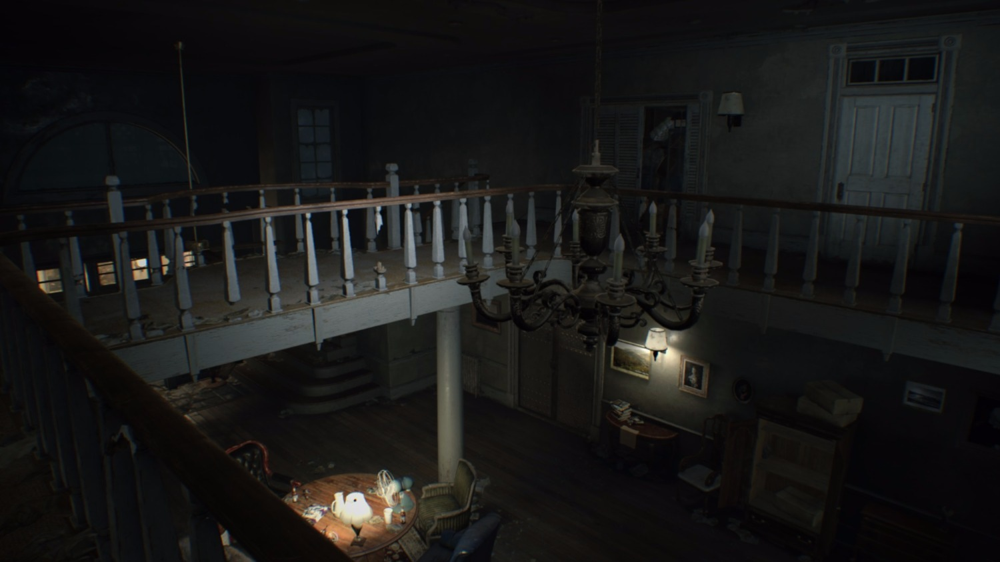
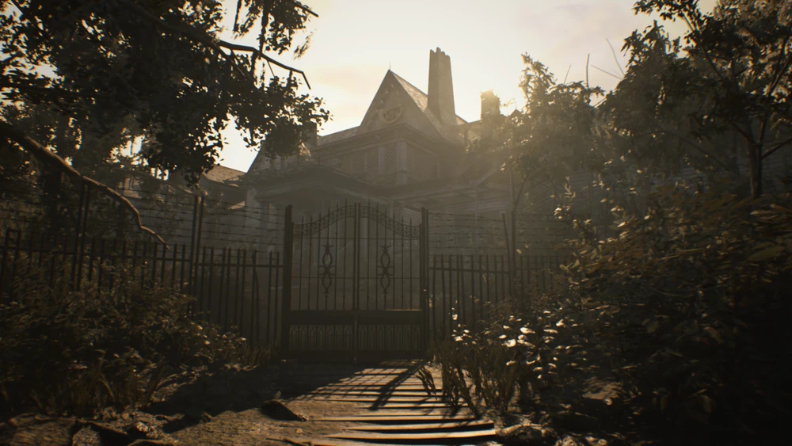
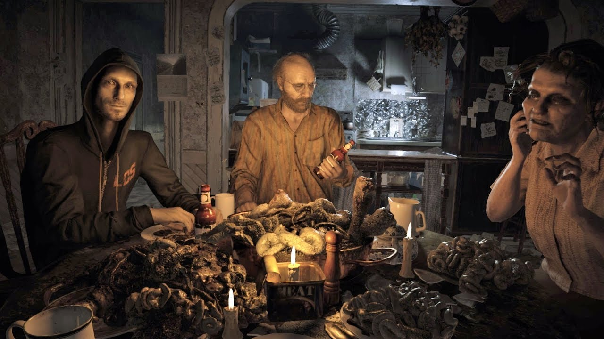
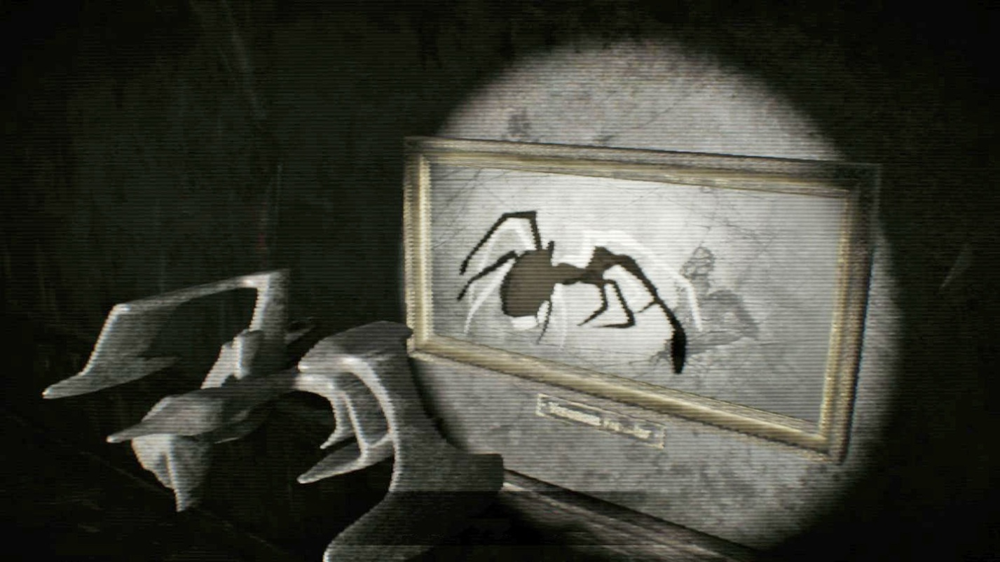
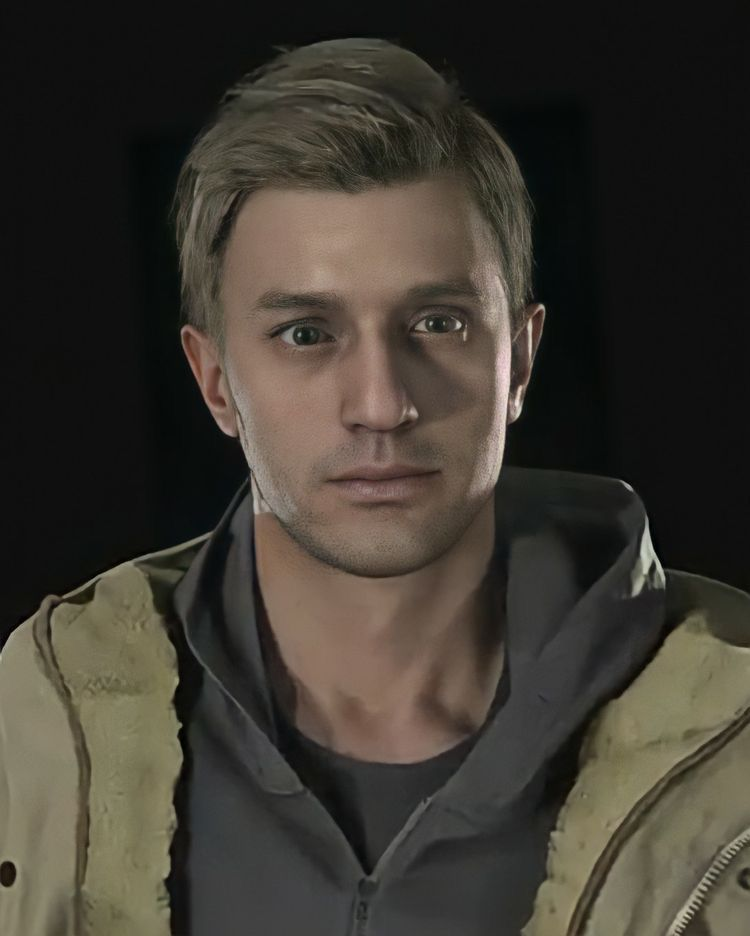
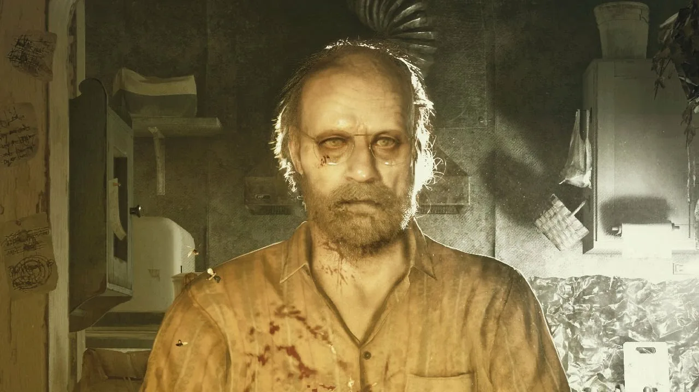
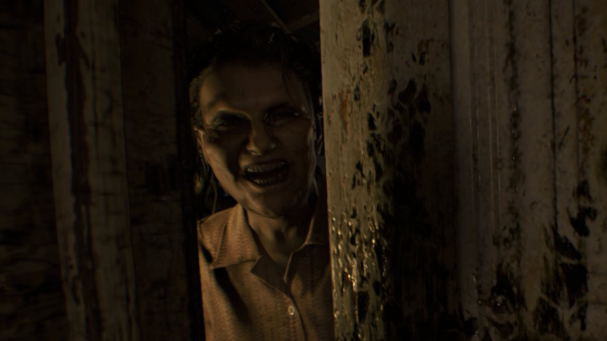
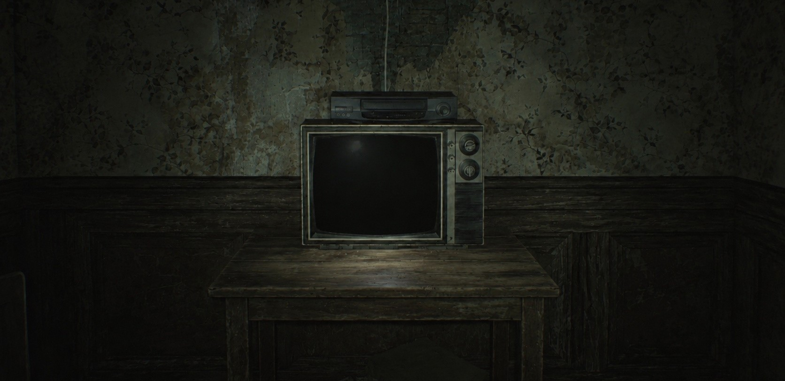

01 / EXPLORE
ИССЛЕДОВАНИЕ
Осматривай комнаты, находи ключи, документы и скрытые проходы. Внимание к деталям здесь важнее скорости.
NEXUS GAME ARCHIVE
WELCOME TO THE FAMILY
BIOHAZARD
Иногда самое страшное место — то, из которого ты уже не можешь выйти.
ВОЙТИ В АРХИВTHE INCIDENT

THE BAKER ESTATE / LOUISIANAТри года назад Мия, жена Итана Уинтерса, бесследно исчезла. Когда он получает от неё неожиданное сообщение, надежда приводит его в заброшенный район Луизианы.
След приводит Итана к старому дому семьи Бейкеров. За его стенами скрывается место, где привычные правила больше не работают, а каждый найденный предмет может оказаться важнее оружия.
Оказавшись в ловушке, Итану предстоит исследовать особняк, искать ответы и попытаться выбраться живым. Но чем больше он узнаёт о его обитателях, тем страшнее становится правда.
SURVIVAL PROTOCOL

Осматривай комнаты, находи ключи, документы и скрытые проходы. Внимание к деталям здесь важнее скорости.

Боеприпасы ограничены. Не каждое столкновение стоит принимать.

Сопоставляй подсказки, изучай предметы и находи способ открыть путь дальше.
PEOPLE INSIDE

Обычный человек, отправившийся на поиски пропавшей жены.
Исчезновение Мии становится причиной путешествия Итана в Луизиану.

Хозяин дома, чьё гостеприимство лучше не проверять.

Хозяйка особняка, связанная с его самыми тревожными уголками.
Персонажи представлены без раскрытия ключевых сюжетных поворотов.
THE FEELING
Узкие коридоры, тяжёлый воздух, скрип половиц и тишина, в которой каждый звук кажется предупреждением. Resident Evil 7 делает пространство частью угрозы: ты редко видишь, что ждёт за следующим поворотом.
Иногда прошлое лучше оставить нетронутым. Но эта запись, кажется, предназначена именно тебе.

Похоже, после просмотра осталось кое-что ещё.
CLASSIFIED RECORD
Седьмая основная часть серии Resident Evil, возвращающая акцент к исследованию, напряжению и выживанию от первого лица.
PC CONFIGURATION
Системные требования Windows-версии игры.
Для запуска игры
Для более комфортной игры
Требования приведены для PC-версии. Фактическая производительность зависит от настроек графики, драйверов и конфигурации компьютера.